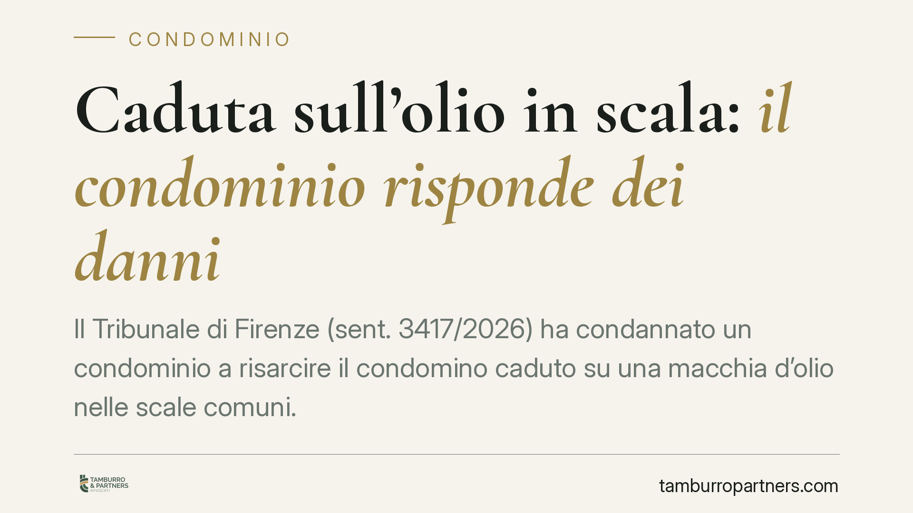

Caduta sull'olio in scala: il condominio risponde dei danni
Il Tribunale di Firenze (sent. 3417/2026) ha condannato un condominio a risarcire il condomino caduto su una macchia d'olio nelle scale comuni. La decisione ribadisce un principio consolidato: il condominio custodisce i beni comuni e risponde dei danni che ne derivano, salvo provare il caso fortuito. Una pronuncia che pesa sulla gestione quotidiana degli spazi condominiali.

Il caso
Un condomino scivola su una macchia d'olio presente su un gradino delle scale comuni e riporta lesioni. Chiede il risarcimento al condominio. Il Tribunale di Firenze, Sezione II Civile, accoglie la domanda e condanna l'ente di gestione al risarcimento del danno.
Il ragionamento è lineare: le scale sono parte comune dell'edificio, il condominio ne è custode e risponde dei danni cagionati dalla cosa custodita, a meno che non dimostri il caso fortuito.
Inquadramento normativo
La decisione applica l'art. 2051 c.c., secondo cui «ciascuno è responsabile del danno cagionato dalle cose che ha in custodia, salvo che provi il caso fortuito».
Si tratta di una responsabilità di tipo oggettivo: non richiede la prova di una condotta colposa del custode. È sufficiente che il danneggiato dimostri il nesso causale tra la cosa (qui, la scala resa insidiosa dall'olio) e il danno subito. A quel punto l'onere si ribalta sul custode, che per liberarsi deve provare il caso fortuito, cioè un fattore esterno, imprevedibile e inevitabile, idoneo a interrompere il nesso causale.
Il condominio è pacificamente qualificato come custode delle parti comuni (scale, androni, cortili, impianti). Questo orientamento è consolidato in giurisprudenza: il custode non è solo il proprietario, ma chi ha la disponibilità e il potere di controllo effettivo sulla cosa.
Nel caso fiorentino, il condominio non è riuscito a fornire la prova liberatoria. La semplice presenza di una sostanza estranea sui gradini non basta a configurare il caso fortuito: occorre dimostrare che l'evento fosse del tutto imprevedibile e che nessun intervento di vigilanza o manutenzione avrebbe potuto prevenirlo. Prova che, in concreto, raramente riesce.
Implicazioni pratiche
Per il condominio e per l'amministratore la pronuncia conferma una posizione di sostanziale esposizione. La responsabilità ex art. 2051 c.c. prescinde dalla colpa: non serve provare che l'amministratore sia stato negligente perché scatti l'obbligo risarcitorio.
Il punto critico è la prova del caso fortuito. Attribuire la macchia d'olio a un terzo ignoto o a un evento occasionale, da solo, non esonera il condominio. Il custode deve dimostrare di aver adottato misure di vigilanza e manutenzione adeguate e che, nonostante ciò, l'evento era inevitabile.
Per il condomino danneggiato, al contrario, l'onere probatorio è più agile: deve provare la caduta, il danno e il collegamento con lo stato dei luoghi. Non deve dimostrare la colpa di nessuno.
Sul piano economico, va ricordato che il risarcimento grava sul condominio nel suo complesso. La relativa spesa, in assenza di copertura assicurativa, si ripartisce tra i condomini secondo i millesimi di proprietà.
Proprio per questo la polizza globale fabbricati, con garanzia per la responsabilità civile verso terzi, assume un ruolo centrale. Verificare massimali, esclusioni e condizioni di operatività è un passaggio che consigliamo di non trascurare.
Cosa fare in concreto
- Verificate la polizza RC del fabbricato: controllate massimali, franchigie ed eventuali esclusioni relative a infortuni nelle parti comuni.
- Documentate la manutenzione: conservate verbali, contratti di pulizia e registri degli interventi. In caso di contenzioso sono la base per argomentare la diligenza del custode.
- Organizzate una vigilanza ordinaria sulle parti comuni: pulizia regolare delle scale, segnalazione tempestiva di anomalie, rimozione immediata di sostanze pericolose.
- In caso di sinistro, raccogliete subito le prove: fotografie dei luoghi, testimonianze, eventuale referto medico del danneggiato. Vanno acquisite prima che lo stato dei luoghi cambi.
- Attivate immediatamente la compagnia assicurativa: rispettate i termini di denuncia del sinistro previsti dalla polizza per non perdere la copertura.
Conclusioni
La sentenza di Firenze non introduce principi nuovi, ma li applica con rigore. Il messaggio operativo è chiaro: la responsabilità del condominio per le parti comuni è ampia e la via d'uscita del caso fortuito è stretta. La migliore difesa resta la prevenzione, unita a una copertura assicurativa adeguata e a una gestione documentata della manutenzione.
*Contributo informativo a cura di Tamburro & Partners - Avv. Giuseppe Tamburro. Non costituisce parere legale.*
Ogni condominio ha una storia a sé.
Se gestisci un'amministrazione e vuoi un confronto su una specifica questione condominiale, scrivi allo studio. Ti rispondiamo entro un giorno lavorativo.